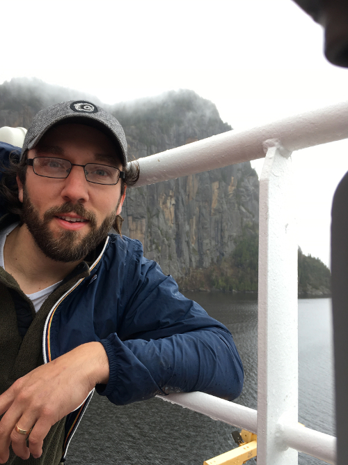

I am a boundary-layer meteorologist.
I study the physical processes affecting the exchange of carbon dioxide, water vapor, and heat between the Earth's surface and the atmosphere.
Over the years I have had the opportunity to conduct field experiments in many exciting regions, including the Northwoods of Wisconsin, the Rocky Mountains, the Arctic, and the Antarctic.
I currently work at the University of Wisconsin–Madison.
I recently became a father to a daughter.
I am excited to be a parent and to continue exploring with work and with my family.